Introduction
- Phylogenetic methods apply to both DNA and protein, but we will focus mostly on DNA since it is easier to work with
- We want to compare samples in order to understand their coancestry
- Individuals do not evolve, populations do
- The specific name is not univocus, we need also to specify the genus
- The species is the only natural classification, higher classifications are human-made
- Darwin’s postulates of evolution: populations change over time
- Individuals in a species have a certain variability
- Some variation is heritable
- Survival and reproduction are not completely random
- Evolution is more like a brancking tree than a ladder
- Evolution involves first mutation and then selection
- Selection can be of different types
- Stabilizing, if it tends to increase the frequency of an optimal trait
- Directional, if a trait becomes more and more extreme
- Disruptive, if it tends to go away from a certain trait
- Balancing, if all traits are equally favored
- Other than selection, evolution is promoted by genetic drift
- The effect is stronger in small populations
- The effective population size is the size of an ideal population with random mating that has the same gene frequency changes as the studied population (the census)
- Two lineages that, going back in time merge in a single ancestor define a coalescent event
- The mrca of all the individuals in a population almost never dates back to the first generation
- The colaescent time of a population is the time passed since the mrca of all individuals existed
- Deterministic evolution is possible only in infinite popualtions: real models are stochastic and we can only predict the probabilities of allele frequencies
- An operational taxonomic unit is one of the leaves of the tree (OTU)
- It is a proxy for the species concept in organisms without clear species boundaries
- A group of taxa that share the same branch is a monophiletic cluster
- The topology of a tree is its branching pattern
- Nodes of the tree are hypothetical taxonomic units (HTU)
- The lenght of edges is related to divergence time
- Trees can be rooted by using an outgroup
- The outgrup is by itself an OTU which is for sure more distant to all the other OTUs than the distance among OTUs
- All the OTUs but the outgrup represent the ingroup
- The root of the tree is the node connecting the outgroup and the ingroup
- If an outgroup is not available, a tree can be rooted by midpoint rooting
- The root is the node connecting the most distantly related OTUs
- A monophyletic group is a clade that includes the most recent common ancestor of all the leaves and all the descendant of that ancestor
- A clade is always monophyletic
- LUCA: life is thought to be monophiletic
- A paraphyletic group includes the most recent common ancestor of all the leaves, but not all the leaves of that ancestor
- A poliphyletic group includes leaves from more than 1 taxon
- Evolution is like a branching tree, not like a ladder
- What is commonly considered ancestor is a sister group, the real ancestor does not exist any more!
- The observed genetic distance between 2 species is the sum of the distance between both species and their common ancestor
- The more distant the split, the more the genetic distance
- Frequency of observed mutation is inversely related to the strenght of selective pressure
- Low mutation rate can be related to higher gene content
- When selecting a region for phylogenetic analysis, we need to adjust the mutation rate with the distance between the OTUs
- I cannot use very divergent regions for distantly related organisms or very conserved regions for closely related organisms!
- Differential mutation rate can be observed also inside genes
- The rate of synonimus (S) and non-synonimus (N) mutation is an indication of the selection regime
- S > N suggests positive selection
- S = N suggests neutral selection
- S less than N suggests negative selection
- The neutral theory of molecular evolution (Kimura) states that most molecular divergence is neutral
- In most populations the effective population size is incredibly small compared to the magnitude of the selective forces
- Most fixation events are the result of stochastic process on quasi-neutral mutations
- Adaptive evolution is more predominant when the species is far from the peaks of the fitness landscape
- Speciation is favored by events that reduce the diversity of a population while increasing the diversity with other populations
- The probability of fixation due to genetic drift of a mutation is equal to its frequency
- If n is the popualtion size, in a diploid population a new mutation has a frequency of 1/2n
- On average, it takes 4n generation to fix a mutation through drift
Phylogenetic markers and trees
- Initially classification was based on morphological carachters, and taxonomy is still largely based on this
- Today we tend to use much more molecular data such as DNA and protein sequences, and RFLPs
- The prefereability of molecular or morphological data is under debeate (Patterson et al, 1993)
- For estinct species, we often don’t have molecular data
- Initially the molecular classification was based on allozymes, then RFLPs became prominent and now microsatellites, SNPs and sequencing data are most used
- The variability of sequences arises from mutations, duplications, recombination, HGT
- Point mutations, insertions and deletions are the most used data for molecular phylogenetics
- Molecular phylogenetics studies the similarities of 2 sequences assuming that they are homologous
- Most variability in homologous sequences arises from point mutations in the 3rd codon position
- Different genes or portions of gene can have different conservation rates, and distantly related homologs can be identified only in enzymes and structural proteins
- In introns usually the divergence rate is that derived from neutral evolution, while in exons it is higher or lower
- When not even sequence of core regions are conserved, homology can be detected at the structural level
- Closely related species can be compared at the DNA level, families and genera are better compared at the aminoacid level
- The level of variability is not constant for all organisms and species
- Citochrome B is really variable in insects but not in mammals
- Cytochrome C is more variable in mammals
- Before doing something on a gene look at the literature!
- Paralogous genes derive from duplication, orthologous genes from speciation
- Studing paralogous sequences is informative for the duplication event
- Orthologous sequences are informative for speciation events
- If I want to study speciation I need to be sure that my locus is orthologous!
- When we compare sequences or characters they must be homologous!
- Homologus genes need to be orthologus in order to be useful for classification
- Multiple substitutions on the same site or equal substitutions in different species can lead to underestimate the genetic distance: homoplasy
- The molecular clock hypothesis assumes constant mutation rate
- Implicitely it assumes neutral evolution!
- Double molecular distance means double separation time
- The mtDNA is smaller, aploid and more variable than the nuclear genome
- It is some orders of magnitude more variable than the nDNA!
- Less efficient proofreading
- Many more replications per individual
- mtDNA is useful for analysing shallow divergence
- It tells only about the maternal lineage!
- Nucelar DNA is less variable, subject to recombination, polyploid: a mess!
- Gene rearrangments are really unlikely to happen twice in the same way
- Therefore, they are relly good to establish relationships
- The insertion of transposable sequences is one of these
- Transcriptome sequencing is better than DNA sequencing in many cases
- It is easier to assemble and annotate
- It is easier to handle since it is smaller
- Recombination events can create incoherent trees for the same species
- In this case It is more adequate to represent the phylogeny with a network, not a tree
- For phylogenetic analysis, we aim at using loci under neutral selection
- To understand the significance of a phylogenetic hypotesis we can use other information from biogeography
- Relations determined by genes under strong selection can give wrong results!
- Convergent evolution can make me cluster unrelated species, while splitting related species that have adapted to new environments
- In some instances tree can be not binary: politomy
- Hard politomy refers to multiple, almost simultaneous speciation from a single ancestor
- Its existence is not clear, but it seems to be approximated by explosive radiation events in viruses
- Soft politomy refers to uncertainty in a given topology
- A species cannot be represented by a single DNA sequence
- When we create a tree we actually reconstruct the phylogeny of the marker, not of the species
- Because of this, we want to use many molecular markers at the same time
- We want to find which gene trees are informative for and overlap with the the species tree
- If the genes that I am studying are paralogous, the coalescent event for the gene will be different than for the species!
- Higher coalescence time is related to lower probability of wrong trees
- The probability of coalescence for a pair of genes in 1 generation is 1/2N, where N is the size of a diploid population
- It is the probability that 2 copy of a gene derive from the same parent gene in the previous generation
- It assumes (Kingman’s assumptions) a panmittic population, neutral evolution, infinite sites and non-overlapping populations
- In a panmittic population there is no preferential mating
- The probability that the gene tree and the species tree don’t overlap is 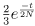
- This derives from the probability of coalescence
- Whith more than 6 genes the probability of a wrong tree is significantly reduced
- Incomplete lineage sorting is the non-overlapping of gene and species tree
- Its probability is directly proportional with the ploidy of the species and inversely proportional with the number of generations since the split and with the number of genes under analysis
Multiple sequence alignments
- A multiple sequence alignment (MSA) is an hypothesis about the homology of multiple sequences
- We arrange sequences so to have homologous positions in the same column
- In order to find the real alignment of 2 sequences, I need to know the sequence of the mrca!
- A simple model for aligning DNA: +1 for matches and -1 for mismatches
- Modelling gaps: we can use different penalties for opening and extending a gap
- Weighted sum of pairs: WSP objective function
- It is a simple way to score MSAs
- For each position, I get the pairwise score of each pair and I sum it
- I can use a weight for each score that balances the over-representation of some sequences
- We could use dynamic programming on a multi-dimensional matrix for maximizing the WSP function, but this requires 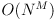 time
- N is the sequence lenght and M the number of sequences
- It is practically impossible for more than 4 sequences
- Progressive alignment methods are fast but sub-optimal
- They build a tree and use the tree for guiding the alignment
- Usually the tree is built with NJ
- They are by far the most used MSA approaches
- Once I have the tree, it procedes by pairwise alignment on the most related OTUs and progressively collapses the nodes
- ClustalX and ClustalW belong to this category
- ClustalW is textual while ClustalX is GUI
- ClustalW automatically corrects for over-represented sequences
- Progressive alignment has a local minimum problem: early errors in the first alignments cannot be corrected later
- Consistency-base MSA: WSP scoring and intermediate sequence information used to improve pairwise alignments
- T-Coffe is slower than ClustalX, but more accurate
- It finds the MSA that most agrees with the pairwise alignments
- Iterative approach: the alignment is refined in iteration steps until I reach the maximum possible score
- It is faster and more effective than the progressive alignment
- I create a guide tree using a raw distance matrix
- This is the framework use by MUSCLE and MAFFT
- Strucutral methods use information about the RNA or protein strucuture
- A loop can be of variable lenght, but a domain is more constrained
- In many cases (well-behaving datasets) the different alignment approaches give the same result, but there can be subtle differences
- In difficult cases the result can be quite different
- These methods employ a random seed: the same analysis can give slightly different results
Distance matrices
- The distance among sequences can be estimated from the number of observed substitutions
- This is called observed distance or p-distance
- I cannot observe multiple substitutions, so I tend to underestimate the distance!
- We say that the p-distance saturates with respect to the true distance d when d gets high
- From now, we will refer to true distance with d and observed distance with p
- The number of mutation expected in a given amount of time can be modelled by a Poisson distribution
- This Poisson process can be described by a Markov chain
- I can describe the Markov chain with a matrix Q of transition probabilities
- The transition probability of X to Y 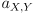 is composed of the product of different terms
- 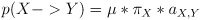
- 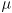 is the mean substitution rate
- 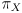 is the relative abundance of the state X
- is the relative mutation rate of X into Y compared to the other possible mutations
- The self-transition probabilities are choosen so to make the sum of outgoing transitions from each state equal to 1
- Note the assumptions we are making
- Mutations probablities are only dependent on the immediately preceding state (Markov property)
- Substitution rates are constant in time (homogeneity)
- The nucleotide frequencies are at equilibrium (stationariety)
- These assumptions are not necessarily biologically reasonable, be careful!
- It is possible to develop time-reversible and non-time-reversible substitution models
- In a time reversible model 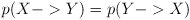, so their matrices are symmetric
- We will only treat time-reversible models
- Given any Q matrix, it is possible to compute the probability of change for any evolutionary time t as exponential of the matrix
- The Q matrix has 8 degrees of freedom
- I have 6 possible relative mutation rates
- These are the mutation rates Saul, not the transition probabilities!
- I have 4 possible nucleotide frequencies
- The 2 groups have to sum up to 1, so I loose 2 degrees of freedom
- 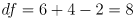
- There are many models that specify a different number of parameters
- Jukes Cantor (JK69) does not specify any parameter (0 parameters)
- It assumes equal nucleotide frequencies, 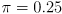
- Substitution rates are all equal
- Kimura 2 parameter (KM) uses equal values for the substitutions, 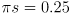, but models transitions and transversions
- HKY85 is like the KM but it accounts for different nucleotide frequencies
- TN models purine transition, pyrimidine transition and general transversion (5 parameters), plus different nucleotide frequencies
- The general time reversible model (GTR) specifies all the parameters (8 parameters)
- More parameters are not always better, I risk to do overparametrization!
- This is true when the exact value for the parameters is unknown
- The strenght of a phylogenetic signal decrease with time since it is more probable to have multiple substitutions
- The plot of observed mutation with respect to distance tends to saturate
- Among-site variation: mutation rate among different position can vary
- An example: the third codon position mutates faster than the first, that in turn mutates faster than the second
- In general, different positions are snjected to different evolutionary forces
- We can model the among-site variation with the gamma distribution with expectation 1 and variance 1/

- The modelled variable r is the relative mutation rate among sites, and its average is of course 1
- 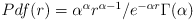
- The shape parameter of the gamma distribution is called , while when included in a Markov model it is called 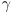 because of the distribution
- By adjusting the parameter I can accomodate different degrees of rate heterogenity
- When 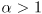 the curve is bell-shaped and models weak heterogeneity, with a big peak around 1
- With 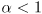 the curve resembles an exponential decay, some position are really variable and others really conserved
Tree reconstruction approaches
- The number of possible trees increases rapidly when increasing the number of nodes: this is the tree-space
- With 3 OTUs I have just 1 possible tree
- With 4 OTUs I have 3 possible trees
- With n OTUs I have 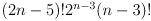 possible trees
- The best tree can be searched with an algorithmic distance-based or characther-based approach (tree search)
- Algorithmic approach: first obtains the distances, and from them draw the tree
- These methods are based on pairwise distances
- UPGMA, WGMA, Neighbour-joining are in this category
- It is really easy to get wrong trees with them!
- They were initially developped for phenograms (trees based on phenotypic features)
- Now they are applied for the construction of ultrametric trees
- A tree is ultrametric when the OTUs are equidistant from the root
- In general, I start from the most similar sequences and I join them in a new OTU, and I proceed like this until I join all the OTUs
- Tree search: find the tree that maximises an optimality criterion, also called objective function
- In general these are function for scoring a give tree, not a series of step for obtaining it
- Maximum likelyhood, maximum parsimony are in theis category
- They can be refined by bayesian inference
- They determine which tree is more likely, given the sequences
- They are more reliable than algorithmic methods
- In charachter-based methods I need to know the ancestral sequence!
- An exaustive search is almost always impossible
- The branch and bound approach is a possible solution: I create an optimal tree with a subset of sequences and I add a sequence at a time
- I can employ some heuristics
- There are methods that combine the approaches: I create a starting tree with neighbor joning and then refine it with other approaches
- I can also start from a tree supplied from the user
- UPGMA and WPGMA are also called clustering methods
- WPGMA: the distance from a node k to another node u is the average of the distances of the children of k to u
- Weighted pair group method with arithmetic mean
- When I join 2 OTUs A and B, I place them at the same distance from the parent node
- Now the distance from the (A,B) node to any other node is the average of the distances from the node to A and B
- When joining the node (A,B) with the node (C,D), their distance is the average among the distace C to (A,B) and D to (A,B)
- UPGMA: like WPGMA but the average is weighted on the numerosity of the OTUs under a node
- Unweighted pair group method with arithmetic mean
- Unweighted refers to the fact that each distance contributes equally to the average, so the actual avergae is weighted on the numerosity!
- In an ultrametric tree it gives the same result as WPGMA
- Both WPGMA and UPGMA are really sensitive to differences in rate of mutation among branches (differential branch lenght from a single split)
- This is defined as rate heterogeneity
- When I average 2 sequences I am assuming that their rate heterogeneity is equal!
- To overcome the limitation of clustering methods, algorithms based on additive distances were developped
- Addittive distances satisfy the four point metric condition for any 4 taxa A, B, C, D that are joined as (A,B) and (C,D)
- 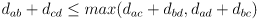
- This is because the branch among the internal nodes is always >= 0
- This means that I can estimate distances among taxa by summing intermediate distances
- Addittive trees are always superior when the tree is not ultrametric
- This is when the sequences do not follow a clock-like behaviour
- Real dataset can deviate from the four-point metric because of noise
- In this case I need to artificially add a systematic error to correct
- Minimum evolution (ME) is a tree scoring function that selects the tree that minimizes overall branch lenght
- 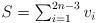
- There are 2n-3 branches in an unrooted tree of n OTUs, and I am assuming that distances are addittive
- In this method branch lenght is inferred from pairwise genetic distances
- An exaustive ME search is practically impossible with more than 10 sequences because of the numerosity of the possible trees
- Neighbor-joining (NJ) is an heuristic used for estimating the ME tree
- It is conceptually related to clustering but it does not assume clock-like behaviour
- It minimizes the metric S of ME locally, in pairwise comparisons, but it does not guarantee to find the global minimum of the metric S
- I always start from a distance matrix
- I calculate for every OTU the net divergence r as the sum of the distances from the OTU to all the other OTUs
- It is basically the sum of the colum of the matrix corresponding to the OTU
- 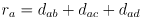
- I create a rate-corrected matrix by subtarcting from the pairwise distances the sum of the net divergences of the 2 OTUs considered divided by n-2
- 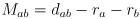
- n is the total number of OTUs
- n-2 are the degrees of freedom
- Note that in this matrix I have negative values
- Now I join the closest OTUs (most negative score) in the trasposed matrix
- I calculate the distance from the node to the OTUs
- I create a new distance matrix with the OTUs fused using the four-point condition
- I know the distance of the C from A from the original matrix
- I know the distance from A to the new node because I just calculated it
- The distance from D to the node is thus the difference among them, since the tree is addittive
- Maximum parsimony: the tree or set of trees that can be explained with the minimum number of evolutionary changes
- This criterion follows from the Okham’s Razor
- There is no real statistical justification
- It is still useful as a fallback method when computational power is an issue for maximul likelihood methods
- Parsimony works better when evolution is slow, but this is NOT an assumption of the method
- It is difficult to state the assumptions of a parsimony method, but we can say when it is good and when it suffers
- Parsimony doesn’t work well with long branch attraction
- Long branch attraction is when 2 long branches (distant nodes) are clustered because they both diverged a lot from the original, not because they are similar
- The similarity arises by chance, is more diversity from all the rest
- It is a systematic error
- It fails catastrofically in the Felsentein zone
- It converges on the wrong tree with increasing certainty as more data are added
- The Felstenstein zone is when unrelated taxa share more identity than related taxa by chance
- Not all variable sites are necessarily used: only those for which the ancestral state is known or can be guessed
- Singlets are excluded (mutation observed only in 1 sequence)
- The objective function of MP is the lenght L of the tree 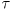
- 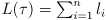
- n is the number of charachters in the MSA
- l is the lenght of that specific charachter
- For every charachter l is the number of changes implied by the tree times the cost of each change
- 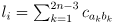
- In the simplest model the cost is 0 if the position is conserved, 1 otherwise
- The costs can be represented by a cost matrix
- The matrix is symmetrical, so that the lenght of the tree is constant regardless of the position of the root
- There are dynamic programmim approaches for finding the optimal tree
- Branch and bound: an algorithm for exhaustive search that prunes some of the possibilities
- It can be applied to MP, but it can use any optimality criterion
- In practice it is applicable for 15-25 taxa
- I do an exhaustive search by progressively adding taxa to the tree
- I keep track of the best solution until now while doing so
- If I find a subtree with not all the taxa added that is worse than the best tree that I have, I stop evaluating it
- It will never give a result which is better than the one that I have
- It is like 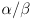 pruning
- Maximum likelyhood: optimize the likelyhood of observing the data given the model
- Likelihood is a posterior probability: it is the probability of the dataset given the model
- For a state of a particular position, its probability is evaluated as the ration among the count for the state and the total count for the position
- 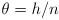, where h is the count of the state and n the total count
- This is a probability, not a likelyhood, I am now building the model given the dataset
- ML is a Markov model that combines the probability of a given carachter state at all nodes
- The models that I use are the GTR, HKK, ecc.
- The likelihood of the tree L is the product of the likelyhood of all sites s
- Since L is usually really small, -Log L is usually used as an optimality criterion
- It is used much more than maximum parsimony
- Typically MP gives me a set of equally good trees while ML tends to give only 1 tree
Nodal support
- Given discording predicitons, I can elaborate a consensus tree
- A strict consensus tree has polytomies for each disagreement
- A consensus based on the majority rule chooses the nodes that appear in most fundamental trees
- We need a measure for node statistical significance: nodal support
- There is a sampling bias in tree reconstruction: we cannot sample the entire population of a species
- I never know if my sample is representative of the population
- We distinguish broadly resampling techniques and character-based approaches
- Bootstrap analysis: random resampling with replacement
- It is useful when I don’t know the sampling distribution and I cannot derive it
- I approximate the real distribution by resampling
- Bootstrapping means to take a subset of the columns of the MSA with replacement until I get an alignment of the original lenght
- Since there is replacement I can have the same column twice and not have some columns
- The new shuffled and resempled alignment is called bootstrap replicate
- I create in this way a series of bootstrap replicates for my dataset
- I can get a tree from each replicate
- The statistical support for a node is the fraction of tree replicates in which the node is present
- Bootstrap results cannot detect systematic errors in tree reconstruction
- It is not suitable when LBA (long branch attraction) is likely
- They also cannot detect a biased sample
- Jacknife analysis: random resampling by independent removal
- It is similar to bootstrap analysis, but I randomly remove one (or more) of the sites in each resampling
- My new subset is thus shorter than the original
- Like in bootstrap, I can get many subsets and I create a tree for each of them
- The jacknife support for a subtree is the fraction of times it appears in the subsets
- In both bootstrap and jacknife I should be suspicious when the support is under 70%
- 200 to 2000 resamplings are usually recommended
- Bremer support or deacy index: a method for testing maximum parsimony
- The decay index is the difference in lenght between the shortest tree and the shortest tree that is incompatible with the node
- In MP the lenght is measured as number of mutations
- I start from the best tree in MP and I count the number of steps needed to make a node collapse
- If I need 2 additional mutations from the best tree to make a node disappear, the decay index is 2
Bayesian analysis
- In the Bayesian framework I update my beliefs with new observations
- I go from a prior belief, to a posterior belif which is the prior conditioned on the data
- It is impossible to go from
 (likelyhood) to 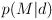 (posterior probability) without knowing 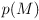
(likelyhood) to 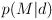 (posterior probability) without knowing 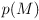
- is called prior in bayesian jargon
- is a posterior
- It is the probability of the prior update with the available data
- If I don’t know anything about the prior I can use a uniform distribution
- I consider all possible values equally likely
- If I calculate a tree with Bayes, there is no need for validation
- What I am using for evaluating trees is already the probability of the tree being correct!
- In this calculations I can ignore 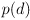 since it is constant for all models
- I can therefore assume that 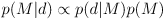
- If I already know something about the taxonomy of the OTUs, I can include them in the prior
- Markov chain Monte Carlo sampling (MCMC): estimate the posterior distribution
- This method is intrinsic to Bayesian inference: I have a prior, I update it with new data, and I continue lihe this
- The new data are the estimated tree topologies at every iteration
- For each topology I have a prior, and I update it with the ML estimate, getting the posterior
- In most cases it is impossible to estimate the posterior distribution analytically
- I build a Markov chain that converges on my posterior probability distribution
- There are many algorthms, but the most used is the Metropolis-Hasting
- I start from a random point in the parameter space

- I nudge it randomly so to get a different point
- I calculate the ratio among the posteriors evaluated with the 2 parameter sets
- If the new posterior is higer I take it, if it is lower I reject it
- I continue like this until convergence
- I can allow to sometimes accept a decrease in my probability to not be trapped in local maxima
- The first stage of the MCMC is usually really fast-increasing and it is called burnin
- After I while I can reach a plateu and I start to wonder around
- It is important to continue the analysis at the plateau so to map the region
- This is called mixing behaviour
- I can tune the mixing by changing the size of jumps
- It can be difficult to understand when I am at convergence
- In certain conditions the Bayesian analysis consistently overestimates the probability of clades, when compared with ML
Ultrametric trees
- Ultrametric trees represent divergence time using branch lenght: they are also called time trees
- In order to build a time tree I need a measure of the time of divergence, which is usually obtained from studying the number of substitutions in a brnach: a molecular clock
- The simplest molecular clock assumes constant substitution rate, and this is really unlikely in nature
- The time of divergence can be calculated from the substitution rate and the observed number of substitutions (which is the branch lenght!) 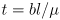
- Different branches tend to evolve at different rates, and we can take account of this by using a relaxed clock
- A strict clock assumes constant across all branches
- The likelyhood test ratio (LTR) can be used to test the suitability of a strict clock on the dataset 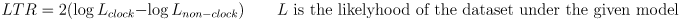
- Closely related organisms tend to have similar substitution rates
- I can probably assume a strict clock among subspecies, but probably not among different species
- Substitution rates are affected by generation time, DNA repair, selection regime, UV exposure, and other factors
- The relative rate test compares the substitution rates of sister nodes using an outgroup as a reference
- The Tajima test checks the difference among the number of characters shared by the outgroup and only one of the 2 ingroups and that shared with the other ingroup
- I expect the same number of non-shared mutation among the 2 ingroups and the outgroup under a strict clock
- The branch lenght test compares the deviation of the distance from the root to the leaf with the average root-leaf distance in the tree
- The local clock is a generalization of the strict clock: it assumes a different strict clock for each branch
- The mutation rate remains constant in a single branch through time
- The autocorrelated relaxed clock is similar to the local clock in that assumes a possibly different clock for each branch, but it enforces more constraints
- It assumes that closer branches will have a more similar clock than far branches
- This is biologically justified by the fact that similar OTUs will share triats that affect the clock in similar ways
- In practice the rates of the branches originating from a node are drawn from a distribution centered on the rate of the parental branch
- The general relaxed clock assumes that each branch has a different substitution rate, but these rates are drawn from the same distribution
- By enforcing the rates to come from a pre-determined distribution, it is effectly less heavily parameterized than a local clock
- Non-parametric rate smoothing (NPRS) is another approach used for the calculation of substitution rates
- It relaxes the assumption of a molecular clock by using a least squares smoothing of local estimates of substitution rates
- For each node 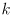 I calculate a value 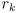 as 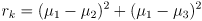
- is the rate of the branch that leads to node , 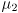 and 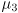 is the rate of the branches from node to its 2 children
- will be 0 if all the rates are equal, and bigger than 0 if they differ in any way
- I then calculate a global value for the tree 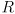 by summing 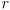 over all the nodes 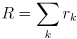
- When I fit the model to the data, I also try to minimize
- Basically I am penalizing sharp rate transitions among branches
- I can use the as a prior in a Bayesian framework
Molecular clock calibration
- We can get a reference point from geological information (i.e. when two landmasses separated)
- Geological time references are frequently really uncertain, since they happen in long timescales
- The fossil record is quite uncertain, since it is discontinuous
- For many species I don’t have a fossil available, or I can have fossils only in specific timepoints with long gaps in between them
- Fossil preservation can influence my time estimate and also the attribution of the fossil to a certain clade.
- If the fossil is really uncomplete or degraded I cannot be sure of the clade it belongs to!
- In general, from a fossil I can get a lower time boundary
- A fossil of a clade tells me that te clade itself cannot be more recent than the fossil, but it can be older!
- In Bayesian analysis I can use the time estimate as a prior
- In this way I can also model the time uncertainty (an hard minimum timeborder and a more flexible maximum time border) by tweaking the prior probability distribution
- Usually an exponential distribution is used as a model for fossil-record timepoints, since it reflects the soft-hard boundary pair
- The lognormal distribution also can model this uncertainty
- It has a high region near the cutoff that decreases sharply towards the minimum and slowly towards the maximum
- It is the probability distribution of a random variable whose logarithm is normally distributed.
- The normal distribution is more used for timepoints that do not derive from fossils
- It is a symmetric distribution, so it cannot implement an asymmetric soft-hard boundary. It is used for geological data
- The uniform distribution is the one that implies less assumptions, but it is also the less informative
- It is used for calibrating the root, since it is the point of the tree of which we usually know less
- Calibrating a clock can require a lot of effort for collecting data to be used as a prior!
- I can increase the reliability of my estimate by including many fixed time references in my tree
- Sensitivity analisys: correlation of the predicitons from different methods
- It can show when my Bayesian prediction are strongly influenced by the priors
- Bayesian analisys tends to be sometimes heavily influenced by priors
- Nodes that are calibrated by timepoints show little difference in their age estimate after the data (sequences) have been considered
- Nodes that do not have a prior estimate are instead heavily guided by the data
- When doing Bayesian inference I need to be carefull to not make the priors override the data
Biases in phylogenetic reconstructions
- With maximum likelihood estimates I get the most likely tree given the data, but it is not necessarily the true tree
- My data could be biased, or not representative of the population
- Methods for nodal support can address this issue
- Systematic errors can derive from biases in the nucleotide composition (e.g. GC content), from saturation of the signal and from exceptional events in the evolutionary history of the OTUs
- Sequences with a similar GC content tend to appear more related than how really are, and vice-versa for really different GC contents
- GC content tend to vary a lot in the same genome and among genomes
- Regions with similar GC content inside a genome are called isochores.
- Different clades can have really different typical GC content
- In bacteria it is reallly variables, in mammals really constant
- We don’t know why GC content varies so much
- Selective mutations, differential codon usage
- There can be a mutational bias where some mutations (e.g. AT -> GC) are more frequent than their opposite (e.g. GC -> AT)
- Genome stability can also be a factor (heat adaptation)
- GC content is not stable and varies over time
- Our models assume that nucleotide composition is at equilibrium and when GC content changes over time this is not true
- Signal saturation happens when the observed distance reaches a plateau due to the many substitutions at the same site.
- Homologies observed in saturated sequences can be due to chance instead of true homology (homoplasy)
- This phenomenon gives rise to long branch attraction
- Branches which are really long compared to the rest of the tree tend to cluster because of chance similarities
- Maximum parsimony is really sensitive to long branch attraction since it cannot model multiple substitutions
- The area of the tree space that suffers from long branch attraction is called Felsestein zone
- In the Felsenstein zone likelihood methods outperforms parsimony
- In some cases however, long branches are really related to each other: this is the inverse Felsenstain zone (Farris zone)
- In the Farris zone parsimony outperforms likelihood.
- The sponge war: sponges were considered the sister clade of all metazoans, but then a paper supported that Ctenophora (jellyfish) is the real sister clade
- A debate started in the community and then this was dismissed
- This mistake was probably due to long branch attraction between the outgroup and Ctenophora
- The choice of the outgroup can introduce a bias!
- Pancrustacea is a monophiletic group that includes insects and crustaceans
- The true topology of the group is debated, mainly because of many really long branches and significant compositional bias
- In time mutations tend to become fixed or extinct
- In incomplete lineage sorting there can be fixation of a mutation in the same allele in different branches generating a case of homoplasy
- This happens when there is a true split before a mutation becomes fixed
- In this case I tend to have unstable nodes, that are not consistent among different analyses
- This is frequent when there are multiple speciation events that are close in time (rapid radiation)
- Long branch attraction: wrong clustering of long branches
- Long branches tend to carry a saturated signal
- Random similarities can make algorithms cluster the branches together, even if they are not related
- ML is typically better than MP when LBA is present
- Felsenstein zone: MP is likely to choose the wrong solution because of LBA
- This happens when the long branches are not closely related!
- Inverse Felsenstein zone (Farris zone): MP is likely to choose the right solution in presence of long branches
- This happens when the long branches are actually also closely related
Phylogenomics
- Phylogenomics: I align all the possible orthologues (typically more than 50) and get a supermatrix
- It is essentially a total evidence approach!
- There are many conflicting genes in a genome
- Sometimes the outliers drive the analysis, be careful!
- In phylogenomics you are wrong but with high statistical support!
- Data can be taken from genomes, but usually RNA-seq is preferred
- The best way to find potential orthologues in a reciprocal BLAST
- In reciprocal BLAST I get a significant BLAST result and I BLAST it again against the query
- If the result is still significant I consider the pair orthologous
- Most of the work in phylogenomics is in building the matrix
- The analysis is then analogous to multilocus phylogenetics
- In phylogenomics papers they usually try with different matrices
- Phylogenomics cannot resolve errors due to base compositional bias
- This can be better corrected by changing the model
- Phylogenomics is really sensitive to model violations
- The CAT model is usually used in phylogenomics
Supermatrix approach
- Polytomies are non-binary splits in a tree
- Hard polytomies are due to rapid radiating evolution and they are hard to solve
- Soft polytomies are due to the use of not-enoguh informative sites for the inference
- We can resolve polytomies by using more genes in my supermatrix
- A bifurcating tree is one lacking polytomies
- What I am analysing in phylogenetics in not really the gene, but mostly the CDS for coding genes
- Of course I can also include non-coding sequences sometimes
- The supermatrix approach: concatenate MSAs
- I align several genes indipendently
- I concatenate the alignments to get a supermatrix
- I compare the tree obtained from the supermatrix with the single gene trees
- I can also concatenate molecular data and classical data, codified with specific carachter states
- It is important to align the single genes independently since I don’t want to align positions of one gene with position of another!
- When I do the phylogenetic inference, I want to use different models for the different genes
- It can give better results!
- To do so, I need to find partitions in the supermatrix
- Partitions are most commonly the original genes that composed it, which are analysed in dependently and then the results are combined
- In the case of coding genes I can include 3 different partitions, one for each coding frame
- Merging the trees of single genes can be done usign congruence or total evindence
- Different genes can give conflicting signals!
- Congruence: I select only the genes with non-conflicting topology
- Total evidence: I use the supermatrix and accept the cumulative result
- Now total evidence is favored
- Case study: Xenoturbella
- It is not clear from morphology where it belongs in the animal tree
- Early studies were based on the nuclear 18S and mythocondrial COX1
- These analyses put it close to molluscs
- A 2003 study that included rare mitochondrial rearrangements places it in Deuterotostomia instead of Proteostomia (molluscs are here)
- In the previous study they actually sequenced molluscs!
- Xenoturbella eats molluscs
- A 2009 study places it again in Protostomia, but not close to molluscs
- It seemed related to Acelomorpha
- The same tree was built with 2 different matrices
- A 330 genes full orthologous matrix
- A 800 genes matrix with missing data
- Another study puts it in deuterostomia by taking into account compositional eterogeneity (CAT model)
- Still deuterostomia using a set including miRNAs
- Explanation: long branch attraction from protostomia outgroups when many of them are included
- 2016 study with no LBA puts it again in protostomia
- It was caused by a cluster of non congruent genes
- Removing these genes it was placed again in deuterostomia
- These were all ribosomial protein genes
- Molluscs are really interesting for phylogenetics
- They have all really similar coalescent times near the Cambrian explosion
- Mithocondrial DNA has uniparental inheritance but
- In higher animals is always maternal
- In molluscs in some cases is maternal, in others parental
- There is huge disagreement among mithocondrial and nuclear phylogeny!
- Also nuclear genes that code for mithocondrial proteins are in agreement with mtDNA!
- Different evolutionary history for nDNA and mtDNA!
- Most uncertainty in phylogenetics inference can derive from a set of non-congruent genes!
- The problem of missing data: I don’t have orthologs for all the species I want!
- A huge bias: we have a lot of genes for some species and very few for others
- If I want to include many genes I will have many missing data
- Genes can be lacking because they are lost in evolution
- There can be a sequencing problem (i.e. gene broken up in different unassembled scaffolds)
- Some studies show that we tend to obtain the same topology if we include missing data
- Usually the result is even better if we include the missing data
- If there are partial genes is it is better to exclude them
- I can have different partials in different species, and this can induce false similarities
- Partitioning means to find the best fitting model for each portion of the supermatrix
- Different genes evolve under different constraints!
- Not necessarily my partition overlap with the genes
- I can have a partition including all the 3rd codon posititons of all genes
- They are found by the software with a best fit approach
- I can also have different partitions that use the same model but with different parameters
Supertree approach
- A supertree is a tree obtained by joining toghether different trees from different datasets
- Informal construction:just join manually different trees
- Formal construction: follows a mathematical approach
- It is used to bring together different studies, or when I do not have the possibility to do a supermatrix
- Usually trees are joined formally when they have the same OTUs
- From MP I can get many different shortest trees, and I need to reconcile this by building a consensus tree
- Consensus method: just report nodes that are in all trees
- If the trees are not compatible I cannot do this
- I can have many polytomies
- It is very fast
- MPR approach: maximum representation with parsimony
- I build a matrix where each column represents a node and each row an OTU
- I put 1 if an OTU is included in a node, 0 otherwise
- In the matrix I put nodes and OTUs from different trees
- I label differently nodes from different trees
- If an OTU is absent from I tree I don’t put 0, but ‘?’
- I create the supertree with MP from the matrix
- I consider the 1, 0 and ‘?’ as charachters and just minimize their changes
- I can see hidden support emerging
- A node absent from all the source trees can appear
- A supertree is built by ignoring the underlying evidence for the single trees!
- Disk covering approach: a faster way to elaborate big supermatrices
- I create a rough tree with NJ
- I split the tree in pieces and I use MPR to reconstruct the supertree
- Biclique approach: for incomplete datasets
- I select bicliques in the dataset containing groups of orthologs
- I get a tree for each orthologous group
- I join the trees with MPR
- Integrative supertree/supermatrix: sometimes pipelines are complicated
- I create a tree with the supermatrix
- I create the single gene trees and I create the suprtree with them
- I can compare them and build the consensus tree/majority rule tree
- I can evaluate the likelyhood of the supertree with the supermatrix data
- It could be better than thedirect supermatrix tree!
- Something huge: the super time tree (time tree of life, TTOF)
- It includes almost all the known organinsm!
- It is a normal supertree built with time trees
timetree.org is an amazing website for getting phylogeny of everithing
- There is also a nice book in the website, if you have time give a look
DNA sequence databases
- Databases are useful for making sequences freely available and for independent validation
- If I take a sequence from a database, I have a reference for it!
- I can find information about the taxonomy related to a sequence
- NCBI is not autoritative for taxonomy, but still gives an useful indication
- I can find metadata about the sequence
- In some cases I can also find in which museum the original speciment is conserved!
- The BOLD database contains a DNA barcode for many species
- RepBase is a database of repetitive sequences
- RNAcentral was a database about RNA sequences that now is discontinued
- There are many alternatives for studying non-conding RNA sequences
- When you sequence something always BLAST it to see if you sequenced the right organism!